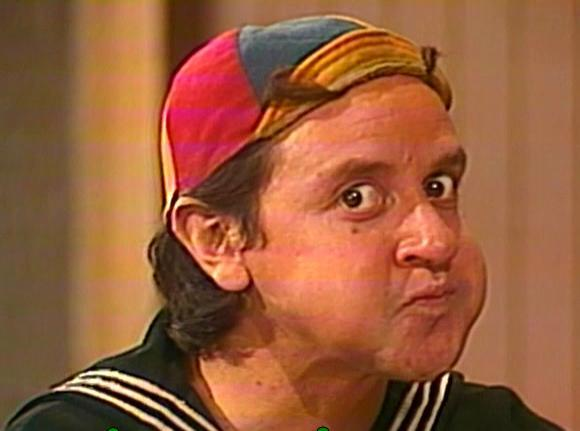

Quico (Carlos Villagrán)
Famoso por suas bochechas, digamos, avantajadas, Quico é um menino mimado. Filho da Dona Florinda mas órfão de pai, ele têm os melhores brinquedos e sempre tem dinheiro para doces e refrescos. Ele adora provocar inveja no Chaves, embora esteja sempre disposto a brincar com ele.
Quico não é lá a mais inteligente das crianças e vive tirando os outros do sério. O resultado disso são os frequentes beliscões que ele ganha do Seu Madruga, mas que são sempre vingadas pela sua mãe, a Dona Florinda.